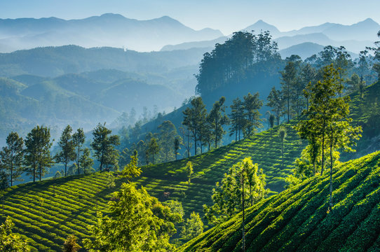
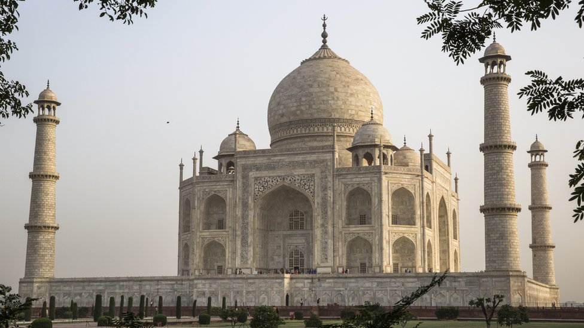
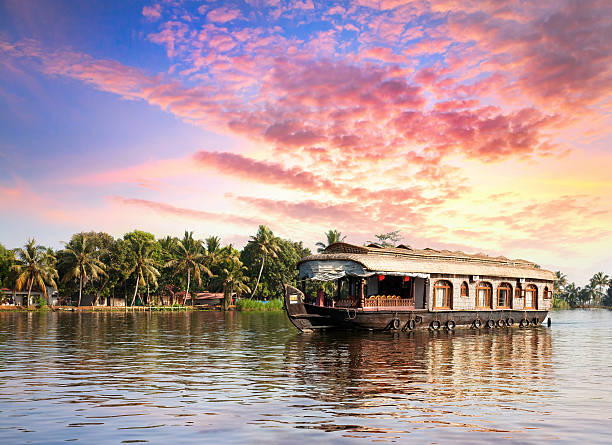
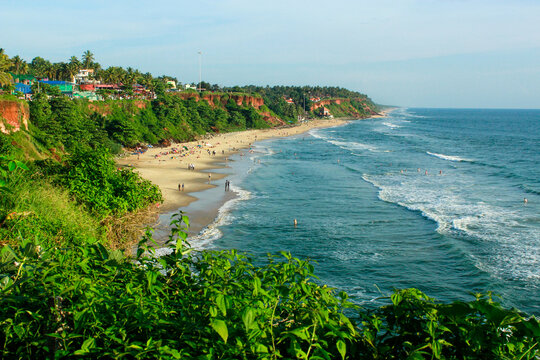
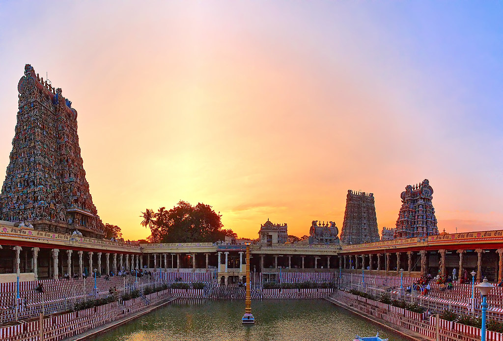

Munnar is a popular hill station in Kerala, India, known for its tea
plantations, scenic
beauty, and
pleasant weather
1. Tea Plantations:
Munnar is famous its vast tea plantations, which cover rolling hills and
offer picturesque
landscapes.
2. Neelakurinji:
The region is known for the rare Neelakurinji flower, which blooms
once every 12 years,
turning the
landscape into a sea
of blue.
3. Anamudi Peak:
Munnar is the gateway to Anamudi, the highest peak in South India,
offering hiking and
trekking
opportunities.
4. Eravikulam National Park:
This national park protects the Nilgiri Tahr, a threatened species, and
also houses various
other
flora and
fauna,including the Neelakurinji.
5. Altitude and Climate:
Munnar is located at an altitude of 1,500 to 2,695 meters above sea
level, offering a
pleasant
climate, especiall during
the cooler months.

The Taj Mahal is a white marble mausoleum located in Agra, India,built by Mughal emperor Shah
Jahan for his wife, Mumtaz Mahal. Construction began in 1632 and took about
22 years to complete, with a workforce of around 20,000 laborers. It is
considered a masterpiece of Mughal architecture, combining elements of Ottoman, Persian
1. Purpose:
The Taj Mahal was built as mausoleum for Mumtaz Mahal, Shah Jahan's beloved wife.
2. Location:
It is situated on the south bank of the Yamuna River in Agra, India.
3. Building Materials:
The Taj Mahal is primarily constructed from white marble, which was sourced from Makrana
in Rajasthan.
4. Construction Time:
The Taj Mahal was built over a period of 22 years, starting in 1632 and completed in 1653.
5. Architectural Style:
The Taj Mahal is a prime example of Mughal architecture, featuring a blend of Ottoman, Persian,
and Indian influences.

Alappuzha, also known as Alleppey, is significant tourist destination in Kerala,
India,
renowned
its backwaters,
beaches, and coir industry. It's often called the
"Venice of the East" due to its intricate
network
of canals.
1. Backwaters:
Alappuzha's backwaters, particularly the Kuttanad region, are a major attraction.
Houseboat
cruises
on these serene
waterways offer a unique and relaxing
experience, showcasing the region's natural beauty and
way of
life.
2. Beaches:
Alappuzha boasts beautiful beaches like Alappuzha Beach and Marari Beach,
providing spaces
for
relaxation, sunset views,
and enjoying the coastal scenery.
3. Nehru Trophy Boat Race:
The annual Nehru Trophy Boat Race, held on Punnamada Lake, is major cultural
event and
significant
tourist draw.
showcases the region's vibrant culture and
competitive spirit.
4. Coir Industry:
Alappuzha is a hub for Kerala's coir industry, with numerous coir factories
and a
long-standing
tradition of coir
production.
5. Tourism:
Alappuzha is a major tourist destination in Kerala, attracting visitors with its
backwaters,
beaches, cultural events,
and religious sites.

Varkala is a coastal town in Kerala, India, known for its unique cliffs and beach.
1. Varkala Beach (Papanasam Beach):
A stunning beach with golden sands, known for its serene atmosphere and the belief that the
water cleanses one's sins.
2. Iconic Cliffs:
Varkala is famous for its dramatic red cliffs overlooking the Arabian Sea, creating a
unique landscape.
3. Janardhana Swamy Temple:
An ancient temple dedicated to Lord Vishnu, a significant pilgrimage site with
intricate architecture.
4. Coastal Tourism and Wellness:
Varkala is a hub for tourists and those seeking wellness, with numerous resorts, yoga, and
Ayurveda retreats.
5. Cultural and Historical Significance:
The town boasts a rich cultural heritage, including historical sites like the
Travancore-Shoranur
inland waterway and the Sivagiri Mutt.

Madurai is a historically significant city in Tamil Nadu, known as the
"Athens of the East"
and
"Thoonga Nagaram" (the
city that never sleeps).
It's a popular pilgrimage destination and weekend getaway.
1. Ancient History:
Madurai has a long history, with references dating back to the 3rd century
BC. It was a
center of
learning, trade, and a
Pandya capital.
2. Religious Significance:
Madurai is a major Hindu pilgrimage center, home to numerous temples,
including the iconic
Meenakshi
Amman Temple, which
is dedicated to the
goddess Meenakshi and her consort, Lord Sundareswarar.
3. Architectural Heritage:
The city temples other structures are notable examples of Dravidian architecture.
4. The Meenakshi Amman Temple:
The temple is a masterpiece of Dravidian architecture and a major attraction,
known for its
towering
gopurams (towers)
and intricate carvings.
5. Location:
Madurai is situated on the banks of the Vaigai River and is known for its
fertile plains and
surrounding hills